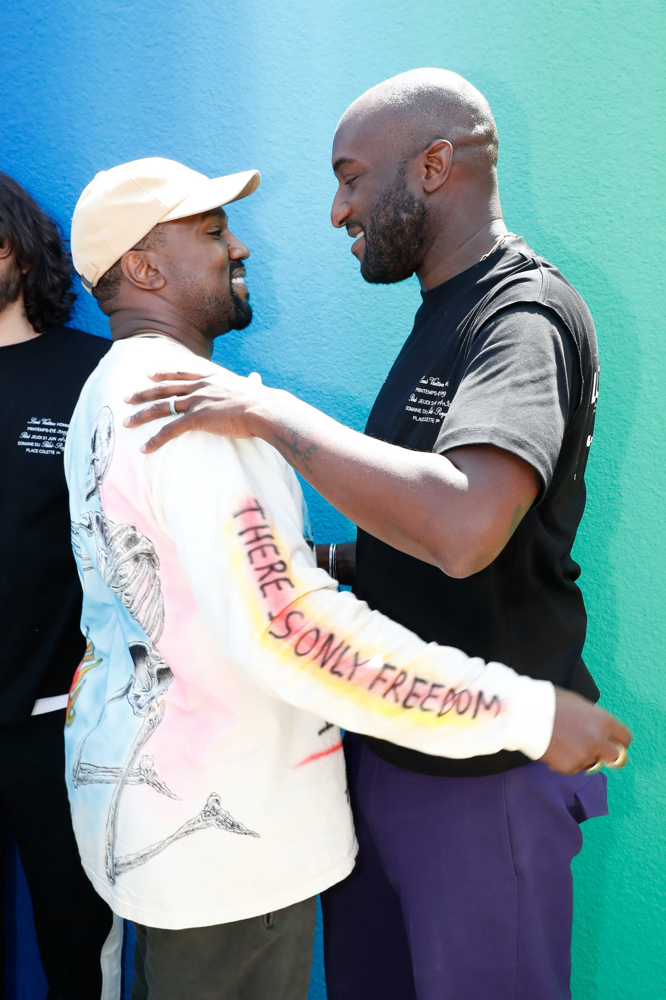
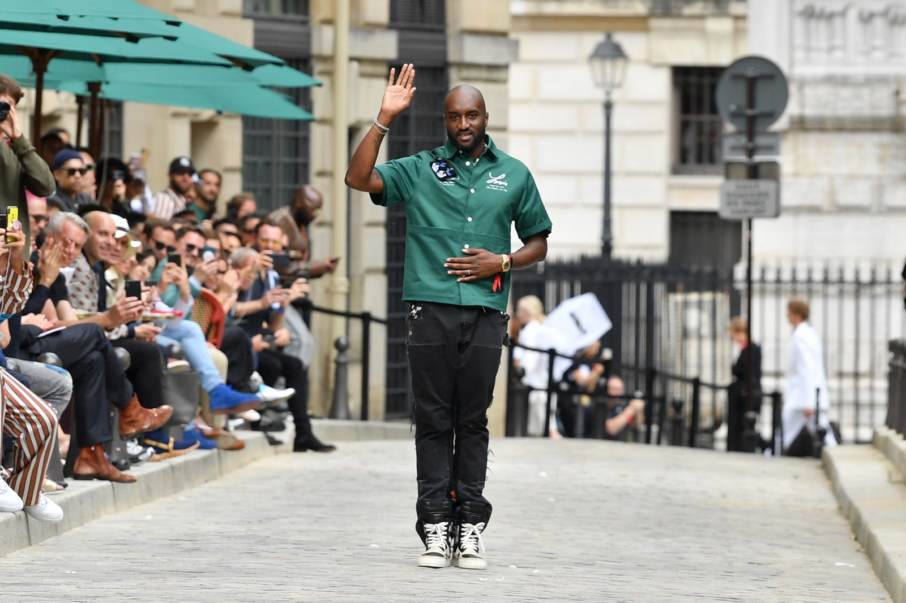

MODA
12 de septiembre de 2021 | Por Emanuel Navarro
Orígenes
Virgil Abloh creció en un barrio de clase media de Chicago como hijo de inmigrantes ghaneses. Durante sus años de formación, el padre de Abloh dirigía una compañía de pintura, mientras que su madre era costurera.
Se formó inicialmente como arquitecto
En la Universidad de Wisconsin-Madison estudió ingeniería civil. Después, Abloh continuó con una maestría en Arquitectura dentro del Instituto de Tecnología de Illinois. Iinteresado en el estilo arquitectónico posmoderno y del deconstructivismo, el diseñador conjugó las enseñanzas costureras que obtuvo de su madre con lo que sería su más grande destino: el diseño de moda.
Empezó, como muchos, con un blog
Inspirado por su propia madre, sus estudios y la cultura callejera de Chicago, Abloh comenzó a explorar el mundo de la moda diseñando camisetas, al mismo tiempo que contribuía en un popular blog de moda urbana: The Brilliance.

Kanye West
Durante su trabajo gráfico en Chicago, Abloh conoció a Kanye West, quien inmediatamente reconoció su creatividad y talento. West le pidió que trabajara en el merchandising y los visuales de su álbum Graduation. Así fue como inició una amistad que, combinando hip hop, arte y moda que revolucionó el mundo que hoy conocemos.
Pasantía en el fashion system
En 2009, Abloh y West comenzaron una pasantía en Fendi. Fue allí en donde ambos se educaron en casi todas las áreas del diseño. Fue ahí mismo donde Michael Burke, ex CEO de Louis Vuitton, vio por primera vez el trabajo de este genio.
Su primera marca
El primer esfuerzo de Abloh por emprender una marca de moda fue en 2012, cuando lanzó una empresa llamada Pyrex Vision. Su misión era apelar a la cultura juvenil, produciendo ropa de diario e híper conocida con un nuevo giro.
Off-White
Poco después de cerrar Pyrex Vision, Abloh fundó Off-White. Una marca que se convertiría en un gran éxito con 10.6 millones de seguidores en Instagram y cuya estrategias para incrementar su presencia en la cultura pop fue colaborar con marcas destacadas como Nike, Levi's, Mocler, Timberland y Champion.
The Ten
Hablando de las colaboraciones de Off-White, justamente podríamos decir que la más importante de su carrera fue cuando Nike le llamó para hacerse cargo de una colección de 10 zapatillas clásicas de esta marca. Apodada The Ten, la colección consiste en el rediseño y la interpretación de diez siluetas emblemáticas de Nike. Éste es considerado todavía el lanzamiento de sneakers más exagerado de su década y, quizás, de toda la contemporaneidad.

Impacto en la moda
En 2018, Abloh hizo historia cuando fue nombrado director artístico de la línea de prêt-à-porter masculino en Louis Vuitton. Eso le convirtió en la primera persona afrodescendiente que ostentaba tan prestigioso título. Ese mismo año apareció en la lista de la revista Time de las 100 personas más influyentes del mundo.
High end street fashion
Abloh es considerado uno de los pioneros de la “alta” moda callejera. Algo que, de hecho, él ha llamado un movimiento post-streetwear. Una estética que se originó en la cultura del hip hop y el patinaje, asi como en los escenarios más distópicos de las grandes urbes. Cuando se derribaron estas líneas entre el lujo y el streetwear bajo la influencia de su mente creativa, en todas partes se comenzó a seguir este patrón de un nuevo orden y una nueva forma de entender la moda. Desde Dior trabajando con diseños de Travis Scott, hasta Gucci colaborando con Dapper Dan.